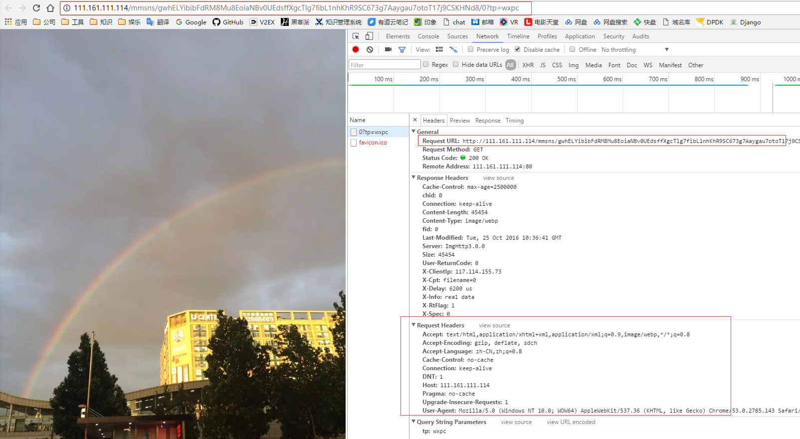

本地图片
即用户自己上传（发表朋友圈）的图片。该类图片会被直接存放在一个以IP地址标识的服务器上。推测，该IP所在的服务器为离用户最近的服务器；再推测，该服务器的IP地址由微信HTTPDNS服务获取。
如图：可以看出，该图片请求不包含cookie，可以缓存

公众号图片
即微信公众号中发表的图片。该类图片存放在一组以域名标识的服务器上，该组服务器应根据某种规则（如内容类型）进行分配。
如图：可以看出，该图片请求也不包含cookie，可以缓存

实验室测试：

外链图片
即图片不在微信服务器上，完全外链进去的图片（也有可能是公众号，因微信公众号分类较多不在此详述）。该类图片无规律，为普通web服务器，且质量混杂。有大型企业的服务入口、广告，一般内容分离比较完善；也有一些小企业的推广号，基本就是一台服务器全都管了，且访问量有限，地域局限。
如：京东商城、微信投票